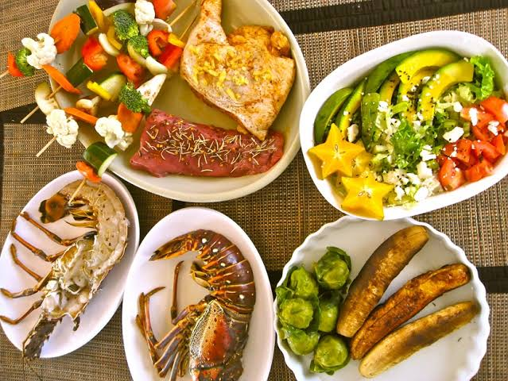

Dining Options
Taniti includes a variety of food choices for tourists, including local restaurants, casual dining, and options near lodging areas.
Explore food and dining options available to visitors during their stay on Taniti.
Taniti includes a variety of food choices for tourists, including local restaurants, casual dining, and options near lodging areas.

Visitors can use this page to identify dining locations near hotels, activities, and transportation routes.